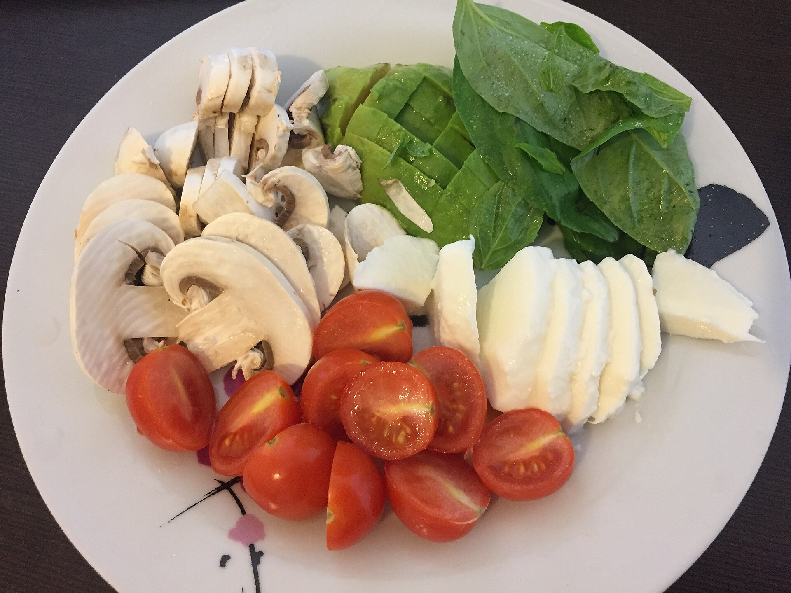

Canónigos con champiñones, cherrys y feta

Ingredientes
- 100-120 g de champiñones
- 100 g de tomates cherry
- 40-50 g de canónigos
- 30 g de queso feta
- 1 cucharadita de aceite de oliva virgen extra
- sal y pimienta negra al gusto
Indicaciones
Lamina los champiñones y corta los tomates por la mitad. Saltea los champiñones con el aceite a fuego medio-alto durante 4-5 minutos. Incorpora los tomates y cocina 2-3 minutos más, procurando que se ablanden y se doren ligeramente sin deshacerse. Coloca los canónigos como base, reparte encima el salteado todavía templado y termina con el feta desmenuzado y pimienta negra.
Consejo
Añade muy poca sal —o ninguna— hasta probarlo, porque el feta ya aporta bastante. Sírvelo inmediatamente para que los canónigos se templen sin perder volumen.